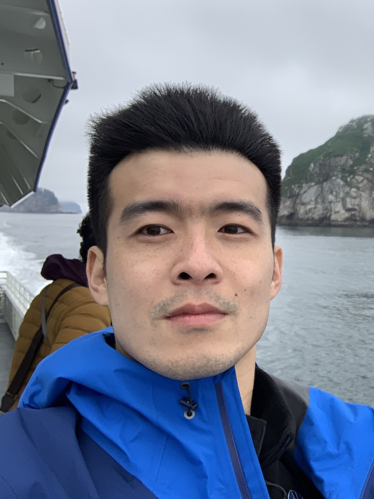
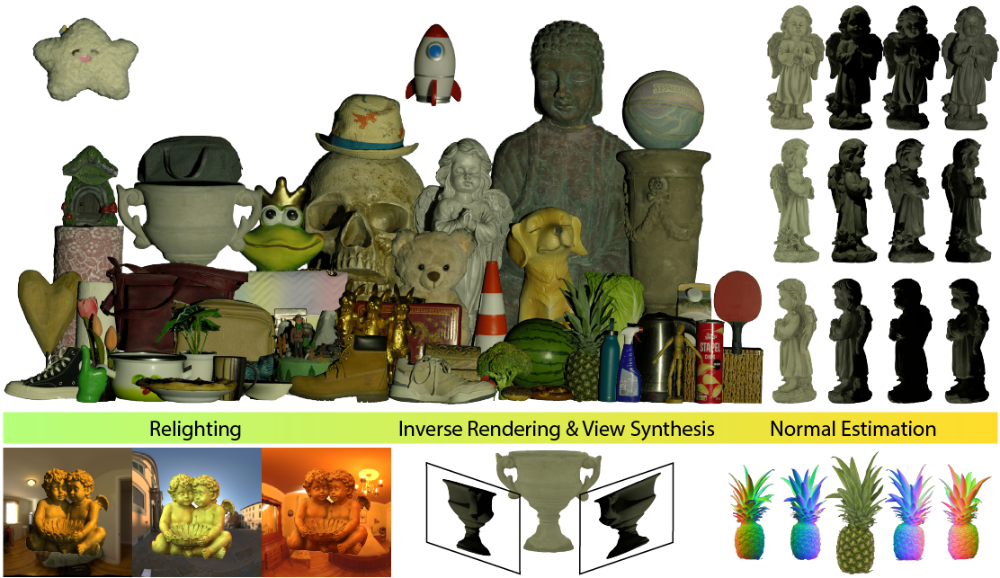
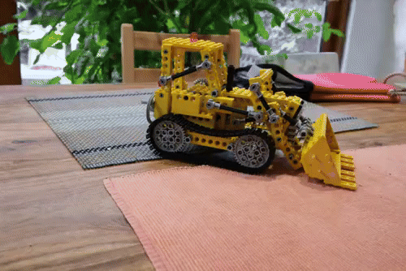
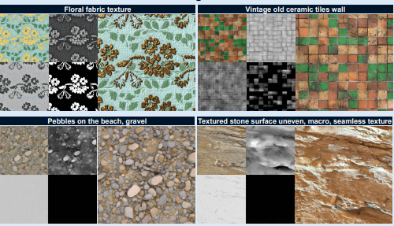
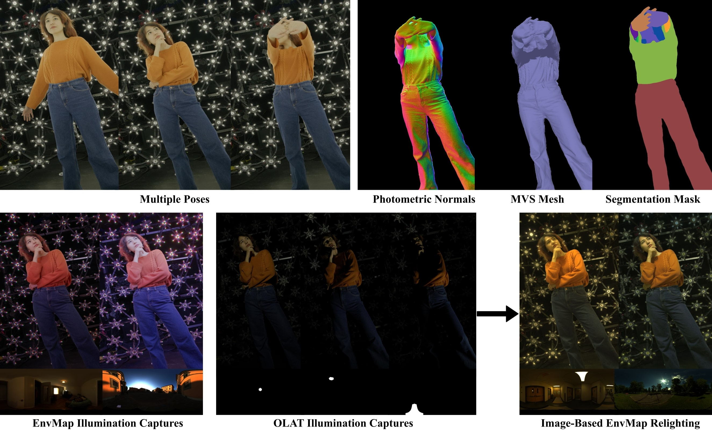
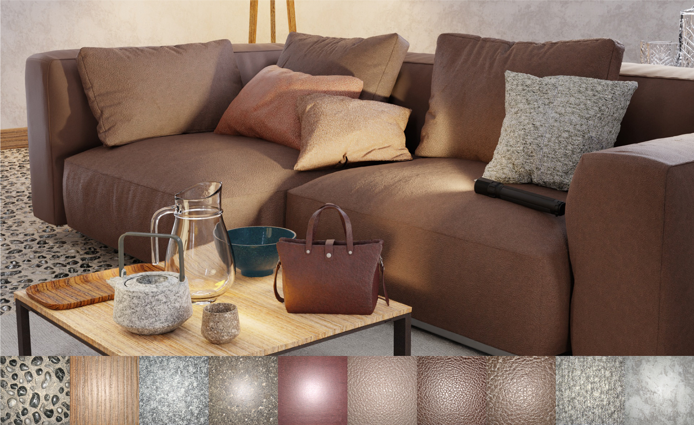
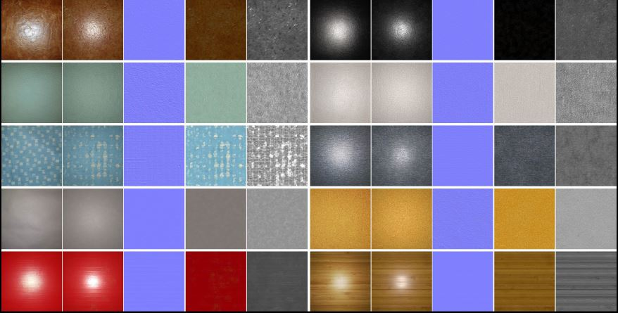
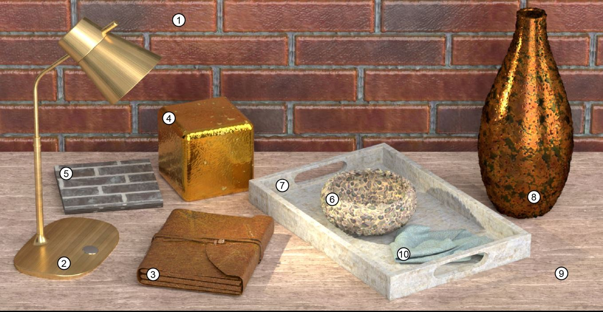
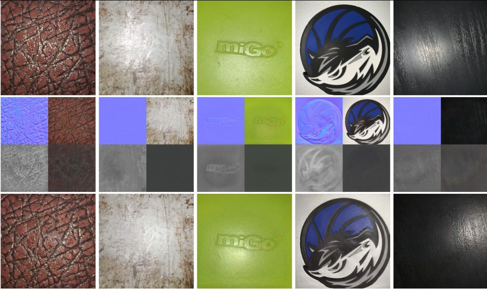
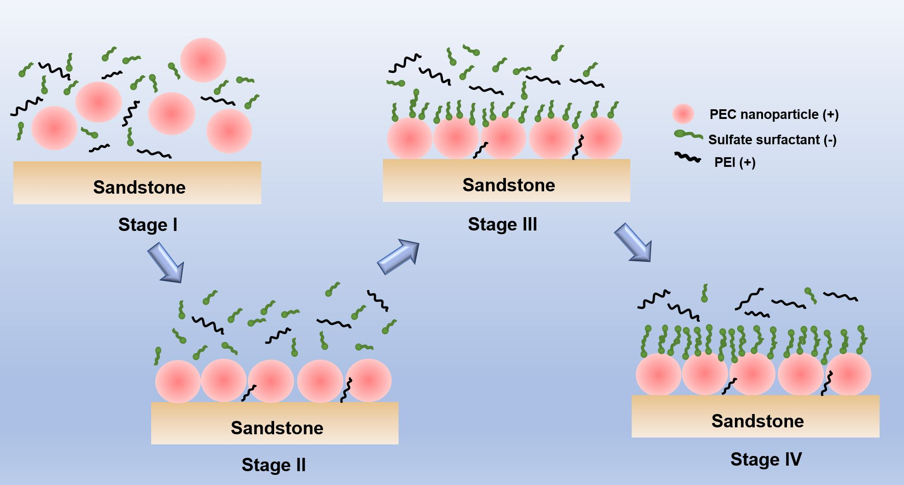

Xilong Zhou
Postdoctoral Researcher
xzhou (at) mpi-inf (dot) mpg (dot) de
 [Nov. 2025]
[Nov. 2025]
Research Interests
My research goal is to develop a controllable and robust generative framework capable of producing virtual worlds that are perceptually indistinguishable from the real world. Toward this goal, my work spans the intersection of generative AI, computer graphics, computer vision, and deep learning. In the past, my research focused on neural rendering, as well as material acquisition and generation. Recently, my work has primarily centered on Generative AI for Video and 3D Content.
In summary, my research interests include (but are not limited to):
In summary, my research interests include (but are not limited to):
- Computer Graphics, Computer Vision, Generative AI, and Deep Learning
- Neural Rendering, Inverse Rendering, Relighting, and Appearance Modeling/Editing
- Generative AI for Material, 3D Content, and Video
- Novel View Synthesis, and 3D Representation
Publications
-
(* Equal Contribution)
-

OLATverse: A Large-scale Real-world Object Dataset with Precise Lighting Control Preprint 2025[PDF] [Paper Page] -

Splat the Net: Radiance Fields with Splattable Neural Primitives Preprint 2025[PDF] [Paper Page] -

RealMat: Realistic Materials with Diffusion and Reinforcement Learning Preprint 2025[PDF] [Paper Page] -
 3DPR: Single Image 3D Portrait Relighting with Generative Priors SIGGRAPH ASIA 2025[PDF] [Paper Page]
3DPR: Single Image 3D Portrait Relighting with Generative Priors SIGGRAPH ASIA 2025[PDF] [Paper Page] -
 PanoDreamer: Optimization-Based Single Image to 360 3D Scene With Diffusion SIGGRAPH ASIA 2025[PDF] [Paper Page]
PanoDreamer: Optimization-Based Single Image to 360 3D Scene With Diffusion SIGGRAPH ASIA 2025[PDF] [Paper Page] -

HumanOLAT: A Large-Scale Dataset for Full-Body Human Relighting and Novel-View Synthesis ICCV 2025[PDF] [Paper Page] -
 RI3D: Few-Shot Gaussian Splatting With Repair and Inpainting Diffusion Priors ICCV 2025[PDF] [Paper Page]
RI3D: Few-Shot Gaussian Splatting With Repair and Inpainting Diffusion Priors ICCV 2025[PDF] [Paper Page] -

PhotoMat: A Material Generator Learned from Single Flash Photos SIGGRAPH 2023[PDF] [Paper Page] -

A Semi-procedural Convolutional Material Prior CGF2023 (Eurographics 2023)[PDF] [Paper Page] -
 Look-Ahead Training with Learned Reflectance Loss for Single-Image SVBRDF Estimation SIGGRAPH ASIA 2022[PDF] [Paper Page]
Look-Ahead Training with Learned Reflectance Loss for Single-Image SVBRDF Estimation SIGGRAPH ASIA 2022[PDF] [Paper Page] -

TileGen: Tileable, Controllable Material Generation and Capture SIGGRAPH ASIA 2022[PDF] [Paper Page] -

Adversarial Single-Image SVBRDF Estimation with Hybrid Training Eurographics 2021[PDF] [Paper Page] -

Enhanced adsorption of anionic surfactants on negatively charged quartz sand grains treated with cationic polyelectrolyte complex nanoparticles Colloids and Surfaces A: Physicochemical and Engineering Aspects, September 2018[PDF]
Datasets
OLAT Datasets: HumanOLAT, FaceOLAT and OLATverse.
Material Datasets: Large-scale real-world material surfaces under a single point light and a moving light source.
Material Datasets: Large-scale real-world material surfaces under a single point light and a moving light source.
Academic Service
Reviewer: SIGGRAPH, SIGGRAPH Asia, Eurographics, Pacific Graphics, ICCV, TOG, IEEE TVCG, IEEE TPAMI, CGF, Computers & Graphics.
Teaching
Co-Instructor: Graphics and AI Seminar, Saarland University
Summer 2025
Teaching Assistant: Analysis of Algorithms, Texas A&M University
Fall 2021, Summer 2019
Teaching Assistant: Machine Learning, Texas A&M University
Spring 2022, Fall 2020
Teaching Assistant: Programming, Texas A&M University
Spring 2021
Teaching Assistant: Discrete Structures for Computing, Texas A&M University
Fall 2019, Fall 2018
Teaching Assistant: Data Structures and Algorithms, Texas A&M University
Spring 2019
Teaching Assistant: Computers for Visualization, Texas A&M University
Summer/Spring 2017
Teaching Assistant: Formation Evaluation, Texas A&M University
Spring 2016
Teaching Assistant: Unconventional Oil and Gas, Texas A&M University
Fall 2015
Selected Awards
Travel Grant, CSCE Department, Texas A&M University
2023
National First Prize of National Petroleum Engineering Design Competition
2013
Honorable Mention of Mathematical Contest in Modeling
2013
National Second Prize of National Mathematics Modeling Contest
2012
Misc
Art: I like painting. You can find some of my artworks from this Portfolio link.
Animation: I have ever made a short animation from scratch using Maya, "Pokeman Go Go Ghost"
Sport: I enjoy hiking, running, playing soccer, and gym"
Animation: I have ever made a short animation from scratch using Maya, "Pokeman Go Go Ghost"
Sport: I enjoy hiking, running, playing soccer, and gym"